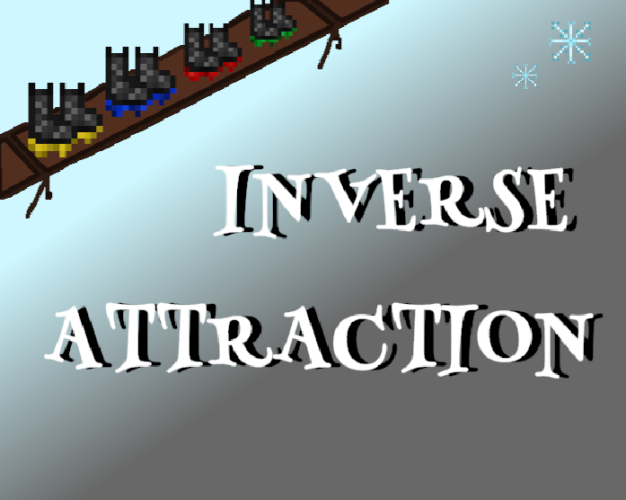

|  |
Inverse AttractionThis game was made for Winter MelonJam 2024 which is the second melon jam I have personally participated in. It is a smaller game jam but has 3 categories for submissions based on prior experience. All of the assets in the game were made within the 72 hour allotted period by me, from the art and animations to the code and UI. I am definitely proud of the result that I created since it is one of my first solo game jam experiences. I hope to expand on the game since the mechanics can be used in interesting ways moving forward with more levels, polish and hopefully a soundtrack since that was one of the things I didn't have any time left for.
Date: December 27th - December 30th, 2024 |
 |
Foundation Of GloryThis game was made for GMTK which is one of the biggest game jams I have participated in with over 7000 entires. I participated in a group of 2 and I was responsible for most of the art assets, including the 3D map which was made in Blender. One of my most interesting game jam submissions since it is a strategy game which is something I have minimal experience in.
Date: August 16th - August 20th, 2024 |
 |
Feel The FireThis game was made for MelonJam 5 through Itch.io which is a smaller, more casual game jam but still provides great experience and practice. It is also my proudest game jam I have participated in because I felt like the game was fully complete and the art I had done was some of my best work. 'Feel The Fire' is a racing game where your goal is to race the clock and get to the finish line before time runs out. There are a few interesting personalities that can be met throughout the game such as Colonel Red as depicted on the left and Clotina, a rookie who the player controls to try and impress her mentor and win the championship.
Date: July 18th - July 21st, 2024 |
 |
Foundation Of Glory"Stoneview County" was by far my longest ongoing project I had ever done with the total time being 4 months. This was a group project with 5 members including myself. I took on a lot more responsibility in this project as I really felt I wanted to showcase what I could do as a developer. My tasks were a variety of different things that needed to get done before the deadline; I was working on UI and menus, sound effects, minimal art, a lot more programming and leading the team to the best of my ability. This game was also showcased at 'LevelUp' in Toronto with the other colleges and universities.
Date: December 21st, 2023 - April 19th, 2024 |
 |
Velocity VortexThis game was created for the first ever St. Lawrence College game jam during my second and final year of college. "Velocity Vortex" was created by a group of 3 and I primarily took on the art and UI tasks for menus and buttons. This game was my very first game jam and is a way to look back at how far I have come as both a programmer and a pixel artist.
Date: October 23rd - October 24th, 2023 |